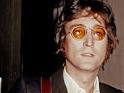
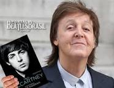

John Lennon (1940-1980) foi um músico inglês, líder e guitarrista da maior banda de rock de todos os tempos, Os Beatles. Sua canção "Imagine" se tornou uma espécie de hino à paz mundial. John Winston Lennon nasceu em Liverpool, na Inglaterra, no dia 9 de outubro de 1940. Era filho do marinheiro Alfred Lennon e de Júlia Stanley. O Winston de seu nome foi uma homenagem a Winston Churchill.
Paul McCartney (1942) é um cantor e compositor inglês, ex-integrante da banda de rock britânica “The Beatles”, que fez grande sucesso nos anos 60. A banda era formada por John Lennon, Paul McCartney, George Harrison e Ringo Starr. Com a dissolução da banda em 1970, Paul McCartney seguiu sua carreira solo. James Paul McCartney nasceu em Liverpool, Inglaterra, no dia 18 de junho de 1942. Estudou no Instituto Liverpool. Com 11 anos conheceu George Harrison, seu futuro companheiro na banda The Beatles.
